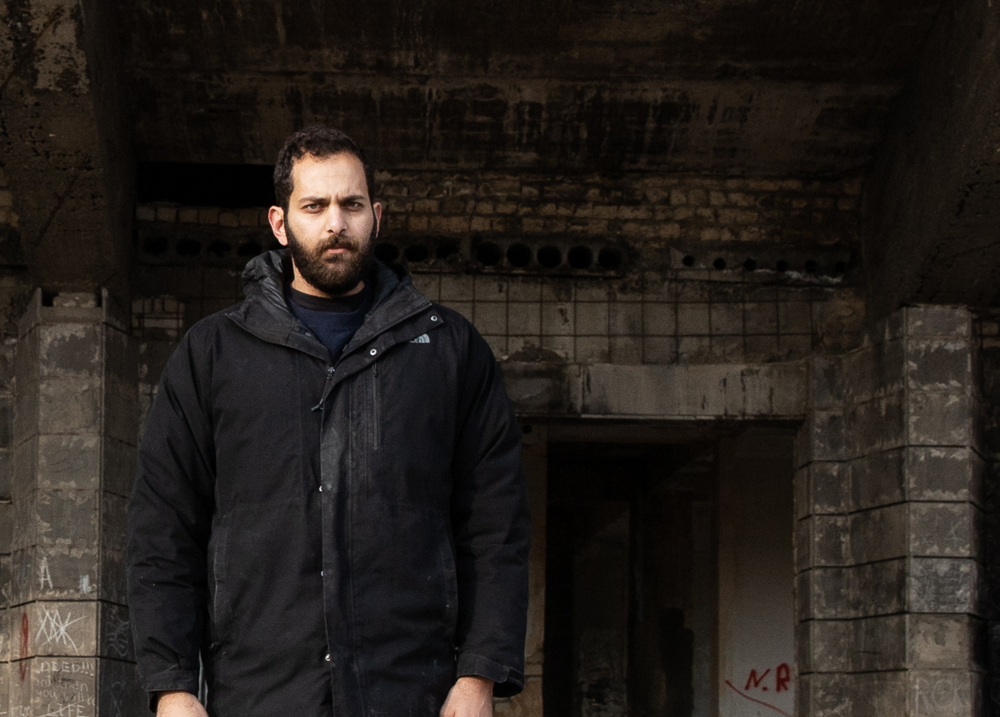
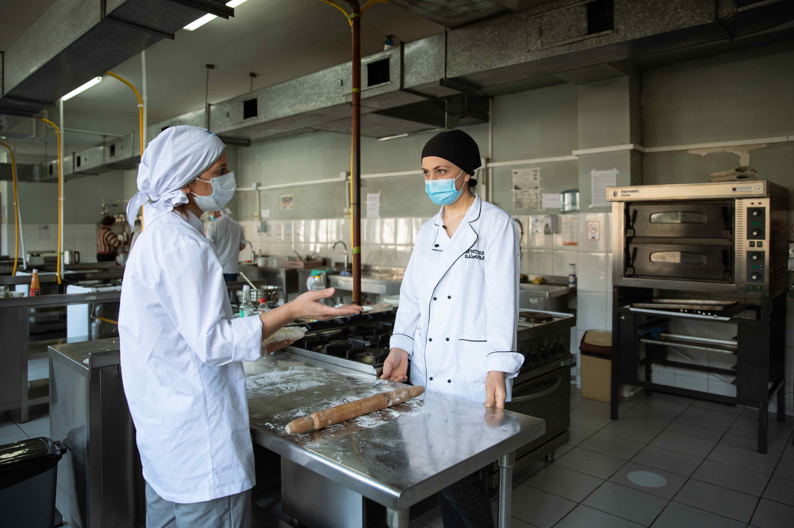

შენობები ხშირად უტყვი მოწმეები არიან იმ სოციალური, ეკონომიკური და
პოლიტიკური მოვლენებისა, რომლებიც მათ გარშემო ხდება. თბილისში
ინდუსტრიულ-პედაგოგიური ტექნიკუმი ამის კარგი მაგალითია.
ბოლო ოთხი ათწლეულის განმავლობაში შენობა ფუნქციონირებდა, როგორც
პროფესიული ტექნიკუმი, არქიტექტურული ძეგლი და დროებითი თავშესაფარი
1991-1992 წლებში აფხაზეთიდან დევნილი 65 ოჯახისთვის ისევე, როგორც
2008 წლის რუსეთ-საქართველოს ომის დროს, ცხინვალის რეგიონიდან იძულებით
წამოსული ადამიანებისთვის.
შენობა მარშალ გელოვანის 4 ნომერში მდებარეობს. პროექტის ავტორი
არქიტექტორი ნიკოლოზ ლასარეიშვილია. მშენებლობა 1978 წელს დასრულდა.
შენობის სტილი კონსტრუქტივიზმსა და ლათინო-ამერიკულ მოდერნიზმიდან
იღებს სათავეს.
“ნიკოლოზ ლასარეიშვილმა ფერების ისეთი პალიტრა შეარჩია, რომელიც
ტექნიკუმის მიმდებარე რელიეფს ბუნებრივად შეერწყა. ლანდშაფტი და
არქიტექტურა ერთმანეთთან ჰარმონიაში უნდა ყოფილიყო.” - გვეუბნება
არქიტექტორი და თავისუფალი უნივერსიტეტის ვიზუალური ხელოვნების,
არქიტექტურისა და დიზაინის სკოლის ლექტორი, ლევან კალანდარიშვილი.
“მაშინდელ არქიტექტორებს არ შეეძლოთ სტანდარტული ტიპიზაციის მიღმა,
რამე უნიკალური შეექმნათ. თუმცა, შესანიშნავი სიმეტრიითა და
პროპორციებით, ეს შენობა ნამდვილად გამორჩეულია. ფანჯრებიც იმ
პერიოდისთვის დამახასიათებელ არქიტექტურას ზუსტად გამოხატავს. არაფერია
გადაჭარბებული.”
თავდაპირველად, ინდუსტრიულ-პედაგოგიური ტექნიკუმი ხუთ ძირითად
განყოფილებას აერთიანებდა: მთავარი შენობა, რომელშიც სასწავლო ოთახები
და ადმინისტრაციული ოფისები იყო; აუდიტორია და ცენტრალური ტერასა,
რომლის გარე ფასადსაც ზურაბ წერეთლის ბარელიეფი ამშვენებდა; სახელოსნო
და რეკრეაციული ზონა, რომელიც სავარჯიშო დარბაზსაც მოიცავდა; ხიდი,
რომელიც მთავარ შენობასა და ინდუსტრიულ კორპუსს ერთმანეთთან
აკავშირებდა; ტექნიკუმის უკან, ცოტა მოშორებით, გორაზე მდგარი
16-სართულიანი სტუდენტური საერთო საცხოვრებელი.
ნათია ოდიკაძე
ტომას იბრაჰიმი
დემო კიწმარიშვილი
ტექნიკუმი, რომელიც საბურთალოსა და დიღმის რაიონებს შორის არის
მოქცეული, დანარჩენი ქალაქისგან თითქოს იზოლირებულია. წლების
განმავლობაში, ერთადერთი, რასაც მასიური მწვანე საფარიდან გამოარჩევდი,
ზურაბ წერეთლის ბარელიეფი იყო, რომელიც შენობის ფასადს 2018 წლამდე
ამშვენებდა.
საბჭოთა პერიოდში ამ შენობაში ტექნიკუმი იყო, რომელსაც მომავალი
მასწავლებლები უნდა აღეზარდა. კვალიფიციური კადრები უნდა მოემზადებინა
სამრეწველო და სამოქალაქო მშენებლობის, სოფლის მეურნეობის
მექანიზაციის, ლითონების ჭრის დამუშავების, სამრეწველო მოწყობილობის
მონტაჟისა და შეკეთების მიმართულებით. სტატიაში “ინდუსტრიული
პედაგოგიური ტექნიკუმის პარტიული ცხოვრება,” რომელიც გამოცემა თბილისის
1978 წლის ნომერში დაიბეჭდა, ვკითხულობთ, რომ ტექნიკუმში 570
ახალგაზრდა სწავლობდა.

ქანდაკების მთავარი მახასიათებელი იყო მამაკაცის ფიგურა ოქროსფერი
ღამურის მსგავსი ფრთებით, რომელიც სატრანსპორტო მოძრაობის მიმართულებით
იყურებოდა.
ამ ფრთების გამო, ბარელიეფი ადგილობრივებისთვის “თბილისის ბეტმენის”
სახელითაც იყო ცნობილი. ამის მიუხედავად, გამვლელების უმეტესობას
წარმოდგენა არ ჰქონდა, ფასადის მიღმა რა სივრცე იყო.
დღეს ინდუსტრიულ პედაგოგიურ
ტექნიკუმს რამდენიმე ფუნქცია აქვს შეთავსებული. იქ მცხოვრებ ხალხს
ერთმანეთთან კომუნიკაცია თითქმის არ აქვს, რაც შენობის შიგნით და გარეთ
ქაოსს ქმნის.
აქ მცხოვრები დევნილი ოჯახები მუდმივ გაურკვევლობაში არიან. მთავრობა
მათ შენობაში ცხოვრების ნებას რთავს, თუმცა საცხოვრებლად გადაკეთებული
ეს სასწავლო ოთახები მათი საკუთრება არ არის. არაერთხელ სცადეს
პრივატიზაცია, მაგრამ უშედეგოდ. ეს მცდელობები მაინც აიმედებთ, რომ აქ
დროებით არიან, თუმცა ლოდინი უკვე 30 წელია გრძელდება. შენობის "დე
ფაქტო მცხოვრებლებს” სივრცის სპეციფიკიდან გამომდინარე და საკუთრების
უფლებების არქონის გამო, უჭირთ შეცვალონ ან გაიუმჯობესონ საცხოვრებელი
პირობები. შენობა ამჟამად ეკონომიკისა და მდგრადი განვითარების
სამინისტროს საჯარო სამართლის იურიდიული პირის ბალანსზეა. ამავე
შენობაშია კოლეჯი “იკარუსი”, აფხაზეთის N2 საჯარო სკოლა და საბავშვო
ბაღი.
შენობის ფასადიც მიგვანიშნებს, რომ ის ერთდროულად მრავალ ფუნქციას
ითავსებს. კოლეჯის ფანჯრებს თანამედროვე, იზოლირებული პლასტმასის
ჩარჩოებით გამოარჩევ. დევნილთა დასახლებას კი წინა მხარეს
თავდაპირველად არსებული ალუმუნის ფანჯრები, ხოლო უკანა მხარეს, ძველი
ხის ფანჯრები აქვს. დევნილებმა შენობას ახალი, არაფორმალური
შესასვლელებიც გაუკეთეს.
ტომას იბრაჰიმი
მკვლევარი და არქიტექტორი ტომას იბრაჰიმი ინდუსტრიულ-პედაგოგიური ტექნიკუმით 2016 წელს დაინტერესდა. უნდოდა უფრო მეტი გაეგო ამ შენობის სტრუქტურასა და მახასიათებლებზე, როგორც სოციალური მოდერნიზმის არქიტექტურის ნიმუშზე. შენობა იმ დროს ბევრად უკეთეს მდგომარეობაში იყო. ზურაბ წერეთლის ბარელიეფიც ჯერ ისევ ამშვენებდა ფასადს.

ქანდაკება ტექნიკუმის შენობიდან დაახლოებით 2018 წლის
თებერვალსა და 2019 წლის თებერვლის შუალედშია მოპარული.
ფოტოები და ესკიზი, თომას იბრაჰიმი, 2017-2018.
როგორც იბრაჰიმი იხსენებს, ბარელიეფი ფასადიდან 2018 წლიდან ნელ-ნელა ქრებოდა და 2019 წლის თებერვალში საერთოდ აღარ იყო. მისმა გაუჩინარებამ იბრაჰიმს ინტერესი გაუჩინა იქ მცხოვრები დევნილების მიმართ - უნდოდა გაეგო, როგორი იყო მათი ყოველდღიურობა ამ შენობასთან გადაჯაჭვული. თბილისის არქიტექტურის ბიენალეზე მავთულის ინსტალაცია შექმნა, რომელიც ქანდაკების მოპარულ ელემენტებს გამოკვეთდა, რაც ბარელიეფის აღდგენის ერთგვარი მცდელობაც იყო.

იმავე წლის დეკემბერში, ტომასმა ტექნიკუმის შენობაში აგორა
ფესტივალი მოაწყო, რომელიც პროექტ INHABIT-ის ნაწილიც იყო.
პროექტი ყოფილი საჯარო შენობების როლსა და ადგილს იკვლევდა
თანამედროვე თბილისის ურბანულ გარემოში. ფესტივალი პირველი
მცდელობა იყო ეს სივრცე უფრო საჯარო და აქტიური გაეხადათ.
სახელდახელოდ აშენებული
და ფასადზე მიდგმული კიბით ტერასაზე და აუდიტორიაში ნებისმიერი
მსურველი ადვილად მოხვდებოდა. ეს ადგილი საგამოფენო სივრცედ,
იქ მცხოვრები დევნილი ბავშვების სათამაშო მოედნად და
სახელოსნოდ იქცა. შენობაში გრაფიტიც გაჩნდა, რაც იმას
მიანიშნებდა, რომ ათეული წლის წინ კი არა, ცოტა ხნის წინ იყო
აქ ვიღაც. პროექტის მიხედვით, იდეალურ შემთხვევაში, ეს საჯარო
სივრცე შენობაში მცხოვრებ დევნილ მოსახლეობას მოემსახურებოდა
და მათ ღონისძიებებს უმასპინძლებდა. საბოლოო ჯამში, ამ
ინიციატივას ქალაქის ცხოვრებაში მათი ინტეგრაციისთვის უნდა
შეეწყო ხელი.
“სულ თავიდან ზურაბ წერეთლის ბარელიეფით მოვიხიბლე, რომელიც
შენობის ფასადზე შევამჩნიე. ფაქტმა, რომ ის მოიპარეს, ჩემი
კვლევა დააჩქარა, უკან მივბრუნდი და შესწავლა დავიწყე. იმ დროს
ბიენალეზე ვმუშაობდი. ნელ-ნელა უკეთ გავიცანი ის ხალხი,
რომელიც ამ შენობაში ცხოვრობდა. ვიფიქრე, რომ იქ მცხოვრები
დევნილებისთვის საჯარო სივრცის შექმნა ძალიან ღირებული
იქნებოდა. კომუნიკაციის მეტი შესაძლებლობა ექნებოდათ და
ქალაქის ცხოვრებაშიც უფრო აქტიურად ჩაერთვებოდნენ.


ფოტოს ავტორი: ანგუს ლიდლი ბრაუნი
“თავიდან ეს პროექტი ძალიან კარგად მიიღეს. სემინარები ჩავატარეთ, გამოფენაც მოვაწყეთ. ტერასაზე ასასვლელად კიბე ავაშენეთ და ფასადს მივადგით. ვფიქრობდი, რომ ეს ყველასთვის ღირებული იქნებოდა. მანამდე, ტერასაზე მოსახვერად ცოცვა გიწევდა. გავასუფთავეთ იქაურობა, სხვათაშორის, მუნიციპალიტეტიც დაგვეხმარა. მემგონი, სულ ეს იყო, რაც მაშინ ამ სივრცეს სჭირდებოდა. ცხადია, განვითარებისთვის უფრო მეტის გაკეთებაც გვინდოდა.”

“ხალხი ამოდიოდა, აინტერესებდათ რა ხდებოდა ტერასაზე, როგორი
ხედი იშლებოდა იქიდან. სემინარებიც აქ ჩავატარეთ.
სამუშაოებიდან ცოტა ხე მოგვრჩა და გადავწყვიტეთ, ავეჯის
დამზადება გვესწავლებინა. სტუდენტებიც მოვიწვიეთ, რომლებიც
თბილისის არქიტექტურის ბიენალეზეც მუშაობდნენ. ავეჯის აწყობა
იქ მცხოვრებლების ჩართულობით დავიწყეთ; 7 მეტრი სიგრძის
უზარმაზარი საქანელაც გავაკეთეთ. ეს ტერასა ნელ-ნელა სათამაშო
მოედანს დავამსგავსეთ.”
“როდესაც ადგილობრივებმა გაიგეს, რომ ეს კიბეები ჩემით ავაშენე
მათთვის საჯარო სივრცე რომ შემექმნა, უფრო მეტად დაინტერესდნენ
და ჩაერთნენ პროცესში. იმედი მიეცათ, რომ ამ სივრცის
გარდასაქმნელად რაღაც მოხდებოდა.”

ნათია ოდიკაძე, კურსდამთავრებული
ინდუსტრიულ პედაგოგიურ ტექნიკუმში პროფესიული კოლეჯი იკარუსი
მდებარეობს, რომელიც სტუდენტებს ტურიზმისა და მომსახურების
სფეროსთან დაკავშირებულ კურსებს სთავაზობს.
შენობის სოციალისტურ-მოდერნისტული არქიტექტურა კოლეჯის
თანამედროვე მატერიალურ-ტექნიკურ ბაზასთან თანხვედრაში არ არის
და.
35 წლის ნატალია ოდიკაძე პროფესიულ სასწავლებელში 2019-2021
წლებში სწავლობდა. ახლა პიცერიაში მუშაობს და სამ შვილს ზრდის.
“იკაროსის კოლეჯში კულინარიის ხელოვნება შევისწავლე - ქართული,
ევროპული და მსოფლიო სამზარეულო. სამსახურის პოვნა არ
გამჭირვებია, გაცილებით რთულია მათთვის, ვისაც ცოდნა არ აქვს.
კოლეჯიდან უკვე მქონდა გარკვეული გამოცდილება დაგროვებული, რაც
სამსახურში ძალიან დამეხმარა.”
“არც ისე მარტივია ამ ადგილას მოხვდე. მე რუსთავიდან მიწევდა
სიარული, მაგრამ მალევე პანდემია დაიწყო, ამიტომ პროგრამას
ნაწილობრივ დისტანციურად ვესწრებოდი.”
“სწავლა რომ დავიწყე, ზურაბ წერეთლის ბარელიეფი შენობის ფასადიდან უკვე გამქრალი იყო. სხვა ვერაფერს ვიხსენებ მის about. როგორც ვიცი, შენობის მეორე ნაწილში დევნილები ცხოვრობენ და კოლეჯს მათგან ერთი კედელი ჰყოფს. ისინი ერთ მხარეს არიან, სტუდენტები - მეორე. ჩვენ პირდაპირი შეხება მათთან არ გვქონია, შესასვლელები სხვადასხვა მხრიდანაა. ჩემი მთელი ყურადღება სწავლაზე იყო გადართული. სამზარეულოში რომ შედიხარ, ერთ კერძს მოამზადებ თუ არა, მეორეს იწყებ. მხოლოდ ამაზე ვიყავი ფოკუსირებული და ლექტორებისა და სტუდენტების გარდა, არც არავის ვეკონტაქტებოდი.”

“როცა კოლეჯს ვიხსენებ, სწავლასთან ერთად, ამ შენობის არქიტექტურაც თვალწინ წარმომიდგება ხოლმე. არქიტექტურაში კარგად ვერ ვერკვევი, მაგრამ ეს რაღაც განსხვავებულია. ერთხელ თუ შეხვალ, არასოდეს დაგავიწყდება. მახსოვს, როცა სწავლა დავიწყეთ, შესასვლელსა და კიბეებზე ფოტოები გადავიღე, იმდენად საინტერესო და უცხო მომეჩვენა.”
"არქიტექტურა რომ მესწავლა, ალბათ, ამ შენობას სულ სხვაგვარად დავინახავდი, მაგრამ არის რაღაცები, რაც უბრალო მნახველისთვისაც ძალიან შთამბეჭდავია, რასაც არქიტექტორის თვალიც კი არ სჭირდება. ეს შენობა გაცილებით მეტია, ვიდრე, უბრალოდ, კოლეჯი ან სამზარეულო.”
დემო კიწმარიშვილი
25 წლის დემოც ინდუსტრიულ პედაგოგიურ ტექნიკუმში ცხოვრობს. დედა აფხაზეთიდან ჰყავს. თბილისში 1992 წელს, ომის გამო ჩამოვიდნენ. დემოს დედა მაშინ 12 წლის იყო. თვითონ 1996 წელს, უკვე თბილისში დაიბადა. ამ დროის განმავლობაში, ოჯახს შენობის სხვადასხვა სივრცეში მოუწია ცხოვრება.

“ეს ადგილი საკლასო ოთახი იყო. ჩვენ რომ შემოვედით, საერთოდ
არაფერი დაგვხვდა - არც აბაზანა, არც სამზარეულო. ერთი დიდი
სივრცე იყო, რომელიც მერე ჩვენ გადავტიხრეთ. სულ თავიდან
შენობის მეორე მხარეს ვცხოვრობდით, ამ სივრცის დაახლოებით
მესამედში. პირველი 5-6 წელი გამუდმებით ოთახებს ვიცვლიდით.
მომდევნო 5 წელი შენობის მე-4 სართულზე ვიყავით. მერე ჩემი და
დაიბადა და გადავწყვიტეთ, ცოტა გავფართოებულიყავით. ძალიან
პატარა ფართი გვქონდა. ამ დროს 2008 წლის ომი უკვე მომხდარი
იყო და ახალი დევნილებიც შემოსახლებულები იყვნენ. ერთადერთი ეს
თავისუფალი ოთახი იყო დარჩენილი. მეზობლებს შორის სივრცის
განაწილებაც არ ყოფილა იოლი.“
სადაც დღეს დემო დედასთან და უმცროს დასთან ერთად ცხოვრობს,
ადრე კოლეჯის აუდიტორია ყოფილა. დღესაც, 30 წლის შემდეგ, ოთახს
ძველი გეგმარების კვალს შეატყობთ. დემომ ადრევე გაიაზრა, რომ
უკეთეს საცხოვრებელ პირობებს ოჯახს უახლოეს მომავალში ვერავინ
შესთავაზებდა, ამიტომ ოთახების გამოსაყოფად, ერთიანი სივრცის
თხელი კედლებით გადატიხვრა დაიწყო.

როგორც დემო ამბობს, ეს ყველაფერი ერთ დღეში მარტივად არ მომხდარა - ფინანსური პრობლემების გამო, დიდხანს გაიწელა. მხოლოდ ზაფხულობით ახერხებდნენ რემონტს. დემო იხსენებს, რომ ყოველთვის უჭირდა იმ თანატოლებთან კომუნიკაცია, რომლებიც დევნილები არ იყვნენ. თავიდან დევნილებისთვის განკუთვნილ სკოლაში შევიდა, რომელიც ასევე ტექნიკუმის შენობაში იყო, თუმცა, მოგვიანებით, ჩვეულებრივ საჯარო სკოლაში გადავიდა. იქ ახალი მეგობრების შეძენა გაუჭირდა და სახლშიც არავინ მიუყვანია სტუმრად. დღეს მთლიანად სამსახურზე და დედისა და დის ზრუნვაზეა გადართული.

“როცა ცოლს მივიყვან, ალბათ, აქ აღარ ვიცხოვრებ. არ მინდა
ჩემმა მომავალმა მეუღლემ და შვილებმაც იგივე გამოსცადონ, რაც
მე. ყველაფერს ვიღონებ, რომ ეს არ მოხდეს. თუ მექნება
საშუალება, დედას და დასაც ჩემთან წავიყვან.”
სამედიცინო უნივერსიტეტის დამთავრების შემდეგ, დემომ
საავადმყოფოში დაიწყო მუშაობა და პარალელურად, პერსონალური
ტრენერი გახდა, რომ დამატებით შემოსავალი ჰქონოდა.
“16 წლიდან ვმუშაობ. დედას უნდა დავხმარებოდი. 18 წლისამ
კლინიკაში დავიწყე მუშაობა. სამედიცინო სფეროში სულ დაბალი
საფეხურიდან იწყებ და ნელ-ნელა ადიხარ ზემოთ. მეც ასე
მოვიქეცი. ამჟამად რესპუბლიკური საავადმყოფოს თერაპიული
განყოფილების უმცროსი ექიმი ვარ. გარდა ამისა, დამატებით ორ
სხვა კლინიკაშიც ვმუშაობ, რომ კარიერულად განვვითარდე. ძალიან
მინდა მომავალში ბავშვთა ქირურგი გავხდე. პარალელურად,
სავარჯიშო დარბაზში პერსონალური ტრენერი ვარ ნახევარ
განაკვეთზე.”
ყველა ოჯახმა ვერ შეძლო საცხოვრებელი პირობების გაუმჯობესება.
“კონკრეტულად ამ ოთახში 2008 წელს შემოვედით. ფული არ გვქონდა,
ამიტომ ეს სივრცე მაშინვე ვერ გადავაკეთეთ. ყველაფერი
ეტაპობრივად შევძელით. სეზონურად ვაგროვებდით ფულს, ცოტას
ვსესხულობდით და ნაბიჯ-ნაბიჯ ვიუმჯობესებდით პირობებს. პირველ
რიგში, აბაზანა გავაკეთეთ, რადგან მანამდე საერთო აბაზანით
ვსარგებლოდბით. ყველაფრის დასრულებას 5 წელი მოვანდომეთ.”
“დაგვპირდნენ, რომ სახლს მოგვცემდნენ, მაგრამ როგორც ხდება
ხოლმე, დაპირებად დარჩა. დედა ყოველთვის ცდილობდა
დაეკანონებინა ეს სახლი, ან ახალი საცხოვრებელი მიგვეღო,
მაგრამ უშედეგოდ. ჩვენ უნდა ვიზრუნოთ საკუთარ თავზე.
საცხოვრებელი დღეს ამდენი კამათის საგანი არ უნდა იყოს. ან
გაქვს, ან არ გაქვს სახლი. ჩვენ შემთხვევაში კი, სადღაც შუაში
ვართ: თან გვაქვს, და თან არა. შენია, მაგრამ ბოლომდე შენ
მაინც არ გეკუთვნის. ვერ გააქირავებ და ვერც გაყიდი. რადგან ეს
შენობა კოლეჯს ეკუთვნის, მიჩვეულები ვიყავით, რომ
ელექტროენერგიის გადასახადს არ ვიხდიდით. მოგვიანებით,
გადასახადები დაგვიწესეს. მიზეზი, დიდი ხნის განმავლობაში ამ
შენობაში ცხოვრება იყო. ხოდა, ან დაგვიკანონე მაშინ ეს ბინა,
ან სხვანაირად დაგვეხმარე.”

“ორი-სამი გამათბობელი ამხელა ფართს ვერ ათბობდა. მეც
მჭირდებოდა ჩემი ოთახი, ჩემი პატარა და სულ აქეთ-იქით დარბოდა
და მეცადინეობას ვერ ვახერხებდი.
ბოლოს, სამზარეულოც დავასრულეთ, ტიხარიც გავაკეთეთ, რომ
შემოსასვლელიდან პირდაპირ სამზარეულოში არ მოხვედრილიყო
ადამიანი. ეს კედლები ფაქტობრივად მარტომ ავაშენე, ხელობა
პრაქტიკულად ნულიდან ვისწავლე."

“რაც თავი მახსოვს, სულ აქ ვცხოვრობ. ამ სივრცეში ზუსტად 13 წელია ვართ. გაუსაძლისი იყო იმ პირობებში ცხოვრება, ამიტომ გადავწყვიტეთ, ჩვენ დაგვეწყო მოქმედება და არ დავლოდებოდით მთავრობის გადაწყვეტილებას: დაგვიკანონებდა ამ ბინებს, თუ ახალ საცხოვრებელს შემოგვთავაზებდა. ვცდილობდით, როგორც ჩვეულებრივ ადამიანებს ისე გვეცხოვრა, ამიტომაც დავიწყეთ სივრცის მოწყობა ნაბიჯ-ნაბიჯ. რასაც ხედავ, თითქმის ყველაფერი ჩემი ხელით არის გაკეთებული. ჩვენნაირი ადამიანები სხვების დახმარების გარეშე ცხოვრებას ვსწავლობთ. რაღაც თვალსაზრისით სასარგებლოც იყო, რადგან ისეთი გამოცდილება დავაგროვე, რაც ბევრ ადამიანს არ აქვს.”